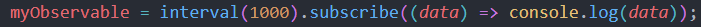
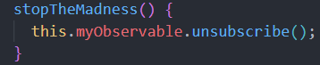
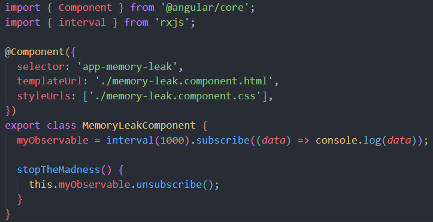
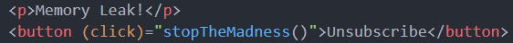

-
Open the developer console by either right clicking the page and
selecting 'inspect', or use the shortcut ctrl + shift + i
-
Navigate to the 'console' tab at the top
-
Notice this count that increments every second? This is an observable we
have subscribed to (making use of rxjs's interval function)

-
In our code, we don't unsubscribe to this observable when this component
is destroyed, leading to a memory leak
-
To see this, simply navigate away from this page, and watch as the count
continues
-
When you return to the page, you'll notice we subscribe once again,
starting a new count while the existing count continues to run
-
Clearly, in a large application, this can lead to significant performance
issues and unnecessary memory usage
- When we click the button to unsubscribe, we fire this method

-
This unsubscribes to the current observable, but any that began before
navigating away from the page and returning, are not able to stop
-
This is why it is important to unsubscribe from any observables that may
not complete in the ngOnDestroy method, ensuring they are unsubscribed
from when navigating away from the component
- Below is the code used in this example

